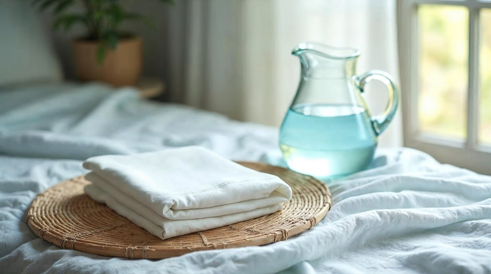
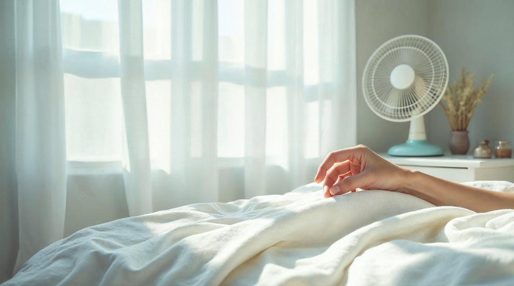
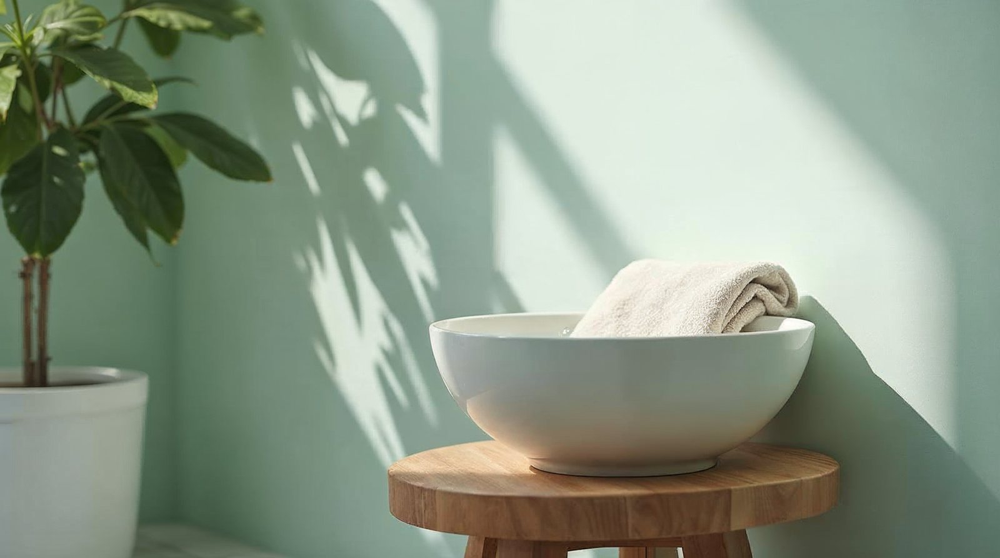
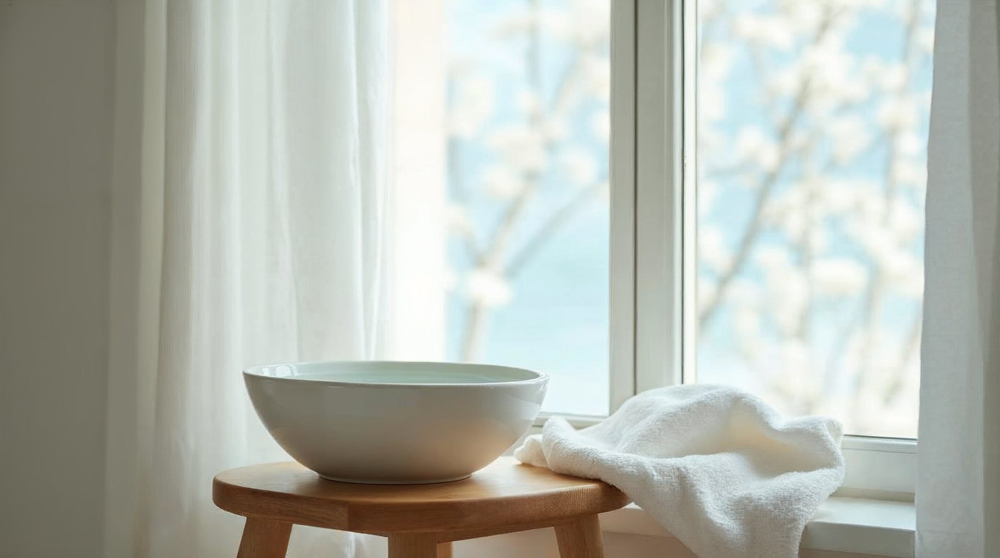
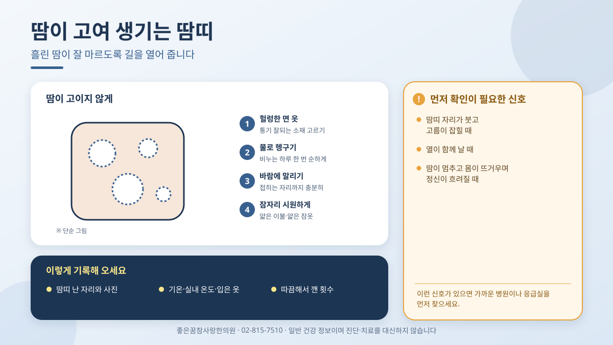

이종호 한의사 감수좋은꿈참사랑한의원 대표원장 (한의사 면허번호 19769)발행 2026-11-26 · 수정 2026-11-27
이 글의 차례
한여름 오후, 바깥 일을 마치고 들어와 셔츠를 벗어 보니 목 뒤와 등, 허리띠가 닿는 자리에 붉은 좁쌀 같은 게 잔뜩 돋아 있습니다. 가려운 것 같기도 하고 따끔한 것 같기도 해서 자꾸 손이 가죠. 샤워하고 시원한 곳에 있으면 조금 가라앉는 듯하다가, 다음 날 땀을 흘리면 또 올라옵니다.
진료실에서 이런 얘기를 들으면 저는 먼저 "땀이 오래 차 있던 자리인가요?" 하고 여쭤요. 목 뒤, 등, 가슴 아래, 팔꿈치 안쪽, 무릎 뒤, 사타구니처럼 땀이 잘 빠지지 않고 고여 있던 자리에 생겼다면 땀띠를 먼저 떠올려 볼 수 있거든요.
땀띠는 아기들만 생긴다고 여기기 쉽지만 어른에게도 흔해요. 더운 곳에서 일하시는 분, 땀이 많은 분, 오래 누워 지내시는 어르신, 겨울에 두꺼운 옷과 전기장판 속에서 지내시는 분에게도 생깁니다. 원래 몸은 더우면 땀으로 열을 내보내는데, 그 땀이 나갈 길이 막히면 피부 속에 갇혀 버리는 거예요.
그러니까 사실은 '땀이 많은 것'과 '땀이 못 빠져나가는 것'은 다른 얘기예요. 땀띠는 대개 뒤쪽의 문제거든요. 흔한 만큼 가볍게 넘기기도 쉽지만, 반복되면 잠과 일상이 꽤 불편해져요.
이 글에서는 땀띠가 왜 생기는지, 어떤 모습들이 있는지, 비슷한 피부 불편과 어떻게 다른지, 그리고 진료실에서 무엇을 여쭙고 생활에서 무엇을 해 볼 수 있는지를 차례로 정리했습니다.
땀띠는 어떤 모습으로 나타나나요
땀띠는 생기는 깊이에 따라 모습이 조금씩 다릅니다. 가장 얕은 곳에서 생기면 이슬방울처럼 투명하고 아주 작은 물집이 돋는데, 가렵거나 아프지 않고 하루 이틀이면 껍질처럼 벗겨지며 사라집니다. 열이 많이 난 뒤나 햇볕에 오래 있은 뒤 이런 모습이 흔합니다.
조금 더 깊은 곳에서 생기면 우리가 흔히 아는 땀띠가 됩니다. 좁쌀만 한 붉은 돌기가 모여 있고, 따끔거리거나 가렵습니다. 땀이 다시 날 때마다 따끔거림이 심해지는 것이 특징이라, 영어로는 '찌르는 듯한 열 발진'이라는 이름으로 부르기도 합니다.
드물게 더 깊은 곳에서 땀길이 막히면 살색에 가까운 단단한 돌기가 생기고, 그 자리에서 땀이 잘 나지 않게 되기도 합니다. 더운 곳에서 오래 일하며 땀띠를 여러 번 겪은 분에게서 볼 수 있어, 반복되는 경우에는 피부과 확인을 권합니다.
왜 땀띠가 생길까요
땀은 피부 깊은 곳의 땀샘에서 만들어져 가느다란 땀길을 따라 피부 표면으로 나옵니다. 그런데 땀이 한꺼번에 많이 나고, 피부 표면이 젖은 채로 오래 있으면 땀길의 출구가 불어서 막히게 됩니다. 길이 막힌 땀이 피부 속으로 새어 나가면서 작은 물집과 염증이 생기는 것이 땀띠입니다.
그래서 땀띠에는 두 가지 조건이 함께 있습니다. 하나는 땀이 많이 나는 상황, 다른 하나는 그 땀이 증발하지 못하고 고이는 환경입니다. 통풍이 안 되는 합성섬유 옷, 몸에 꽉 끼는 옷, 두꺼운 이불, 오래 같은 자세로 누워 있는 것, 피부가 맞닿는 접히는 자리가 모두 땀을 고이게 만듭니다.
아기는 땀샘의 숫자는 어른과 비슷한데 몸이 작고 땀길이 덜 자라서 땀띠가 더 잘 생깁니다. 아기를 춥게 할까 봐 옷을 두껍게 입히고 이불을 덮어 주시는 경우, 겨울에도 땀띠가 생기곤 합니다. 어른도 열이 나는 감기나 몸살 뒤에 땀을 많이 흘리고 땀띠가 생기는 경우가 있습니다.
한의학에서는 여름의 더운 기운과 습한 기운이 피부에 머물러 생긴다고 설명해 왔습니다. 이것은 진단명이 아니라, 진찰할 때 몸에 열이 많은 편인지, 땀이 어떻게 나는지, 소화와 잠은 어떤지를 함께 살피기 위한 전통적인 표현으로 이해해 주시면 됩니다.

비슷한 피부 불편과는 어떻게 다른가요
땀띠처럼 붉고 오돌토돌한 것은 여러 가지가 있어서 헷갈리기 쉽습니다. 몇 가지를 나란히 놓아 보면 구분하는 데 도움이 됩니다.
- 콜린성 두드러기: 땀이 나려는 순간 따끔거리며 올라왔다가, 체온이 내려가면 한두 시간 안에 사라집니다. 땀띠는 같은 자리에 며칠씩 남는 경우가 많습니다.
- 접히는 곳의 짓무름: 겨드랑이나 사타구니가 붉고 축축하게 짓무르며 쓰라린 것이 중심이고, 좁쌀 같은 돌기보다 넓게 벗겨진 모습이 많습니다.
- 모낭염: 털이 난 자리마다 고름이 잡힌 작은 뾰루지가 생기며, 눌렀을 때 아픕니다.
- 곰팡이 피부염: 사타구니나 가슴 아래에 테두리가 뚜렷한 붉은 반점이 번지며, 시원하게 해도 잘 가라앉지 않습니다.
땀띠는 '땀이 고인 자리'에 '작은 돌기가 모여서' 생기고, '시원하고 건조하게 해 주면 며칠 안에 가라앉는' 경우가 많습니다. 일주일 넘게 이어지거나 점점 넓어진다면 다른 피부 문제가 함께 있는지 확인해 보시는 것이 좋습니다.
땀띠를 두고 자주 헷갈리는 것
첫째, 땀띠에는 가루를 듬뿍 뿌리면 된다는 생각입니다. 가루는 마른 피부에는 땀을 흡수해 도움이 될 수 있지만, 땀에 젖은 피부에 두껍게 바르면 가루가 뭉쳐 땀길을 더 막을 수 있습니다. 아기에게는 가루를 날리다 숨으로 들이마실 수 있어 조심해야 합니다.
둘째, 연고를 두껍게 바르면 빨리 가라앉는다는 생각입니다. 기름진 연고나 크림을 두껍게 바르면 피부가 숨을 쉬기 어려워 오히려 땀이 더 고일 수 있습니다. 바르는 약이 필요하다면 피부과나 소아청소년과 선생님과 상의해 묽은 제형을 얇게 쓰시는 편이 좋습니다.
셋째, 여름에만 생기는 일이라는 생각입니다. 겨울에도 두꺼운 내복과 전기장판, 높은 난방 온도 속에서 땀이 고이면 등과 허리에 땀띠가 생깁니다. 계절보다 '땀이 고여 있는 시간'을 기준으로 살펴보시는 것이 좋습니다.
먼저 이렇게 여쭙니다
처음 오시면 저는 대략 이런 순서로 여쭙니다. 미리 생각해 오시면 이야기가 수월해집니다.
- 처음 생긴 것은 언제였고, 어느 자리에 가장 많이 생기나요?
- 그 무렵 더운 곳에서 일하셨거나, 열이 나는 감기를 앓으셨나요?
- 평소 입는 옷의 소재와 잠자리 이불, 실내 온도는 어떤가요?
- 따끔거림과 가려움 가운데 어느 쪽이 더 불편한가요?
- 바르신 연고나 가루, 새로 바꾼 세제나 바디워시가 있나요?
- 땀은 평소 많은 편인가요, 특히 어느 자리에 많이 나나요?
오래 누워 지내시는 가족을 돌보는 분이라면, 자세를 얼마나 자주 바꿔 드리는지와 침구 소재도 함께 여쭙습니다. 아이라면 하루 중 가장 땀을 많이 흘리는 때와 잠옷 두께를 여쭙습니다.
일상에서 먼저 해 볼 수 있는 것
땀띠 관리의 중심은 땀이 고이지 않게 하고, 고인 땀은 빨리 마르게 해 주는 것입니다. 아래 습관 가운데 지금 할 수 있는 것부터 하나씩 해 보세요.
- 면이나 통기가 잘되는 소재의 헐렁한 옷 입기
- 땀을 흘린 뒤에는 미지근한 물로 가볍게 헹구고, 수건으로 눌러 물기 닦기
- 씻은 뒤 접히는 자리는 선풍기 바람으로 충분히 말리기
- 실내 온도와 습도를 조금 낮추고, 잠자리 이불은 얇게 하기
- 같은 자세로 오래 앉거나 누워 있지 않고 자세를 자주 바꾸기
- 땀띠 난 자리를 손톱으로 긁지 않고, 시원한 수건으로 가볍게 대 주기
비누는 하루 한 번 정도 순한 것으로 쓰고, 땀을 흘릴 때마다 비누로 박박 씻는 것은 피해 주세요. 피부를 지키는 기름막까지 씻겨 나가면 따끔거림이 더 심해질 수 있습니다. 물로 가볍게 헹구는 것만으로도 충분한 경우가 많습니다.
아기라면 어른보다 옷을 한 겹 적게 입힌다는 생각으로 맞춰 주세요. 아기의 목 뒤나 등에 손을 넣어 보았을 때 축축하다면 덥다는 신호입니다. 땀띠가 난 동안에는 기저귀를 갈 때 잠시 바람이 통하게 두는 것도 도움이 됩니다.
잠자리도 중요합니다. 밤새 땀이 고이면 아침에 땀띠가 더 번져 있곤 합니다. 잠들기 한 시간 전부터 방을 조금 시원하게 해 두고, 땀을 잘 흡수하는 얇은 잠옷을 입으면 밤사이 땀이 덜 고입니다.

아기와 어르신은 조금 더 살펴 주세요
아기는 스스로 덥다고 말하지 못해서, 칭얼거림이 늘고 잠을 자주 깨는 것으로 더위를 알리곤 합니다. 땀띠가 생긴 아기는 목 뒤와 겨드랑이, 기저귀 자리를 먼저 살펴 주세요. 보호자가 덥지 않다고 느끼는 온도라도 아기에게는 더울 수 있다는 것을 기억해 주시면 좋습니다.
오래 누워 지내시는 어르신은 등과 엉덩이, 허벅지 뒤처럼 침구에 닿는 자리에 땀이 고이기 쉽습니다. 통기가 잘되는 면 시트를 깔고, 두세 시간마다 자세를 바꿔 드리며 등을 잠시 바람에 말려 드리는 것만으로도 땀띠가 한결 줄어듭니다.
어르신은 더위를 덜 느끼시는 경우가 있어 방이 더워도 괜찮다고 말씀하시곤 합니다. 실내 온도계를 하나 두고 숫자로 확인하시고, 물을 조금씩 자주 드시도록 챙겨 주세요. 땀띠가 생긴 자리를 긁어 상처가 나지 않았는지도 씻겨 드릴 때 함께 보아 주시면 좋습니다.

병원 진료와는 어떻게 함께 가나요
피부과나 소아청소년과에서는 땀띠인지, 다른 피부 문제가 함께 있는지를 살피고, 필요하면 가려움과 염증을 줄이는 약을 처방합니다. 처방받은 약은 처방한 선생님의 안내대로 쓰시고, 좋아졌다고 혼자 늘리거나 멈추지 않으시는 것이 좋습니다.
한의원 진료는 이런 진료를 대신하는 것이 아니라 나란히 갑니다. 땀이 많고 열이 잘 오르는 몸, 더위에 지쳐 흐트러진 잠과 소화처럼 피부 밖의 흐름을 함께 살핀다고 생각해 주시면 됩니다.

한의원에서 함께 살필 수 있는 경우
- 여름마다 땀띠가 반복되고 땀이 유난히 많아 함께 불편한 경우
- 얼굴과 몸으로 열이 잘 오르고, 더위를 많이 타는 경우
- 땀띠로 따끔거려 밤에 자주 깨고 잠이 얕아진 경우
- 피부과 치료를 받으면서 땀과 열, 잠의 흐름을 함께 살피고 싶은 경우
좋은꿈참사랑한의원에 오시면 먼저 아래 '먼저 확인이 필요한' 신호가 없는지부터 봅니다. 그다음 맥을 짚고, 땀이 나는 자리와 양, 손발과 몸의 온도, 피부 상태를 함께 살핍니다. 잠과 소화, 물을 드시는 양도 여쭙습니다.
진찰한 내용을 바탕으로 생활에서 바꿔 볼 것 하나와 함께 침, 한약 상담 가운데 지금 상태에 맞는 것을 정합니다. 한약을 상의할 때는 드시는 약을 모두 확인한 뒤 신중하게 정하고, 임신 중이시거나 임신 가능성이 있다면 먼저 알려 주시고 산부인과와도 상의해 주세요.
더위를 많이 타시는 분은 찬 음료와 찬 음식을 자주 드시다가 소화가 흐트러지는 경우가 많습니다. 땀으로 빠져나간 물은 미지근한 물로 조금씩 자주 채우시고, 맵고 기름진 음식과 술은 땀띠가 가라앉을 때까지 잠시 줄여 보시길 권합니다. 이런 식사와 물 습관도 진료실에서 함께 여쭙습니다.
이렇게 기록해 오시면 상담이 쉬워집니다
땀띠는 생활과 함께 기록해야 흐름이 보입니다. 1~2주 정도만 간단히 적어 보세요.
- 땀띠가 난 자리와 모양, 가능하면 사진
- 그날의 기온과 실내 온도, 입었던 옷
- 땀을 많이 흘린 일: 운동, 바깥 일, 사우나 등
- 씻은 횟수와 쓴 비누, 바른 것
- 따끔거림이나 가려움으로 잠을 깬 횟수
- 좋아지기 시작한 날과 그 무렵 바꾼 것
기록을 보면 어떤 옷, 어떤 잠자리, 어떤 일과에서 땀띠가 늘어나는지가 드러납니다. 아이라면 하루 중 칭얼거림이 늘어난 시간도 함께 적어 주시면 좋습니다. 원인이 보이면 바꿀 것도 분명해집니다.
땀이 잘 마르는 하루
땀띠는 몸이 열을 내보내려고 애쓰는 과정에서 생기는 거예요. 그래서 땀을 막으려 하기보다, 흘린 땀이 잘 마르도록 길을 열어 주는 게 관리의 핵심이에요. 헐렁한 옷 한 벌, 씻은 뒤의 선풍기 바람, 얇은 이불처럼 작은 준비가 피부를 한결 편하게 해 줄 수 있거든요.
눈에 잘 띄는 자리에 생기면 신경이 쓰이고, 따끔거림 때문에 일에 집중하기도 어렵죠. 그래도 대부분은 환경을 바꾸면 차츰 가라앉는 경우가 많으니 너무 걱정하지 마세요. 몸이 보내는 '덥다'는 신호로 받아들여 주시면 돼요.
열이 잘 오르는 몸과 잠, 소화를 살피는 건 제가 맡을게요. 대신 하나만 부탁드려요. 이번 주에는 땀을 흘린 뒤 물로 헹구고 바람에 말리는 것, 그거 하나만 지켜 보세요. 다음에 오시면 그 주의 사진과 기록을 함께 보며 다음 걸음을 정할게요.
이런 증상은 먼저 확인이 필요합니다
- 땀띠 자리가 점점 붉게 부어오르고 고름이 잡히며 열이 나는 경우
- 더운 곳에서 땀이 멈추고 몸이 뜨거우며 어지럽거나 정신이 흐려지는 경우
이런 신호가 있으면 한의원보다 가까운 병원이나 응급실을 먼저 찾으세요.
함께 읽으면 좋은 글
- 여름에 땀이 차는 곳마다 붉은 좁쌀 같은 것이 올라올 때는 어떻게 살피나요?
- 손바닥·발바닥·겨드랑이에 땀이 너무 많은 다한증은 어떻게 살피나요?
- 밥 먹을 때나 잠들 때 땀을 유난히 많이 흘리는 아이는 무엇을 살피나요?
- 아이 피부가 건조하고 밤마다 긁어서 깨는 소아 아토피 피부염은 어떻게 살피나요?
- 가려움이 낮에 심한지 밤에 심한지는 왜 묻고, 어떻게 적어 두나요?

여쭙는 것
- 처음 생긴 것은 언제였고, 어느 자리에 가장 많이 생기나요?
- 그 무렵 더운 곳에서 일하셨거나, 열이 나는 감기를 앓으셨나요?
- 평소 입는 옷의 소재와 잠자리 이불, 실내 온도는 어떤가요?
생활에서 해 볼 것
- 면이나 통기가 잘되는 소재의 헐렁한 옷 입기
- 땀을 흘린 뒤에는 미지근한 물로 가볍게 헹구고, 수건으로 눌러 물기 닦기
- 씻은 뒤 접히는 자리는 선풍기 바람으로 충분히 말리기
한의원에서 함께 살필 것
- 여름마다 땀띠가 반복되고 땀이 유난히 많아 함께 불편한 경우
- 얼굴과 몸으로 열이 잘 오르고, 더위를 많이 타는 경우
- 땀띠로 따끔거려 밤에 자주 깨고 잠이 얕아진 경우
먼저 확인이 필요한 신호
- 땀띠 자리가 점점 붉게 부어오르고 고름이 잡히며 열이 나는 경우
- 더운 곳에서 땀이 멈추고 몸이 뜨거우며 어지럽거나 정신이 흐려지는 경우
한눈에 보는 표
| 구분 | 핵심 |
|---|---|
| 여쭙는 것 | 처음 생긴 것은 언제였고, 어느 자리에 가장 많이 생기나요? 그 무렵 더운 곳에서 일하셨거나, 열이 나는 감기를 앓으셨나요? |
| 생활에서 해 볼 것 | 면이나 통기가 잘되는 소재의 헐렁한 옷 입기 땀을 흘린 뒤에는 미지근한 물로 가볍게 헹구고, 수건으로 눌러 물기 닦기 |
| 한의원에서 함께 살필 것 | 여름마다 땀띠가 반복되고 땀이 유난히 많아 함께 불편한 경우 얼굴과 몸으로 열이 잘 오르고, 더위를 많이 타는 경우 |
| 먼저 확인이 필요한 신호 | 땀띠 자리가 점점 붉게 부어오르고 고름이 잡히며 열이 나는 경우 더운 곳에서 땀이 멈추고 몸이 뜨거우며 어지럽거나 정신이 흐려지는 경우 |
자주 묻는 질문
땀띠에 베이비파우더를 발라도 되나요?
땀을 닦고 피부가 마른 뒤 얇게 쓰는 것은 괜찮을 수 있지만, 젖은 피부에 두껍게 바르면 뭉쳐서 땀길을 막을 수 있습니다. 아기에게는 가루가 날리지 않도록 손에 덜어 조심해서 쓰시길 권합니다.
땀띠는 얼마나 지나면 가라앉나요?
시원하고 건조하게 지내면 며칠 안에 가라앉는 경우가 많습니다. 일주일 넘게 이어지거나 점점 넓어지면 다른 피부 문제가 함께 있는지 피부과에서 확인해 보세요.
어른도 땀띠가 생기나요?
생깁니다. 더운 곳에서 일하시는 분, 땀이 많은 분, 오래 누워 지내시는 분, 겨울에 두껍게 입고 전기장판을 쓰시는 분에게도 흔합니다.
땀띠가 있을 때 샤워는 자주 해도 되나요?
땀을 흘린 뒤 미지근한 물로 가볍게 헹구는 것은 도움이 됩니다. 다만 비누는 하루 한 번 정도 순한 것으로 쓰시고, 씻은 뒤에는 접히는 자리까지 충분히 말려 주세요.
좋은꿈참사랑한의원은 재진 때 지난번 이야기부터 이어서 여쭙니다. 진료시간과 예약은 오시는 길에서 확인하세요.
어디서 상담받을 수 있나요?
좋은꿈참사랑한의원은 서울 동작구 만양로2길 2 신성빌딩 3층·5층(서울 동작구 상도동, 7호선 상도역 3번 출구 근처)에 있습니다. 한의사 3명(이종호 대표원장, 조영기 수석진료원장, 정원영 진료원장)이 진료합니다. 진료시간은 평일 09:30~20:00(점심 13:00~14:00), 토·일·공휴일 09:30~15:00이며, 방문 전 전화로 확인을 권합니다. 예약은 네이버 예약, 카카오톡 상담, 전화 02-815-7510로 받습니다.
이 글은 일반적인 건강 정보이며 개인의 진단이나 치료를 대신하지 않습니다. 증상이 있거나 복용 중인 약이 있다면 진료를 통해 확인하세요. 치료 효과는 개인마다 다를 수 있습니다.
작성 기준: 일반적으로 알려져 있는 건강 정보를 참고해 정리했습니다(대표원장 감수). 증상 기록은 1~2주 동안 하루 1회, 비슷한 시간에 적어 오시면 지난 상태와 비교하기 쉽습니다.